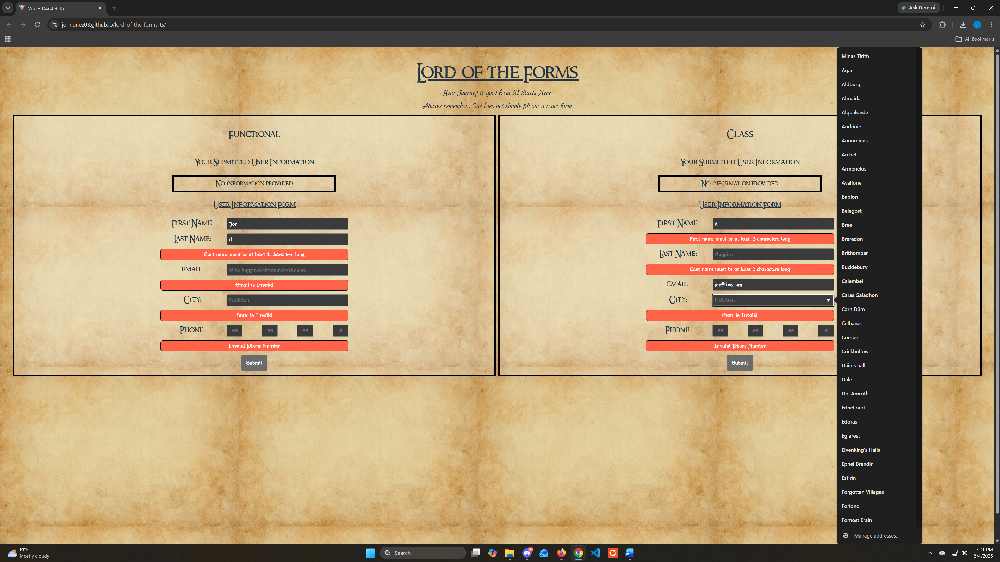
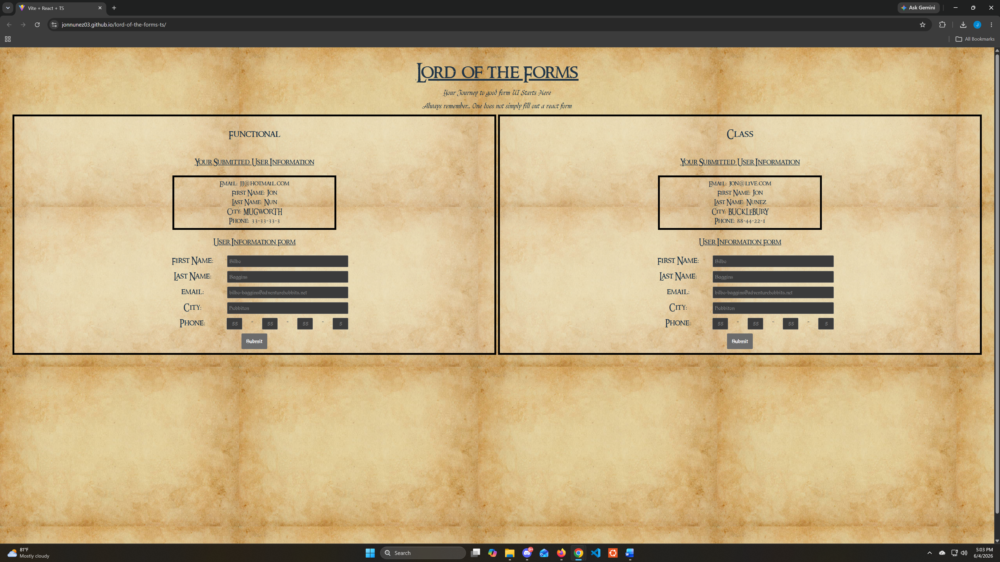

Objective
Create a form that collects user data, validates user input, and displays submitted information on the same page.
Case Study
A themed form with validation and TypeScript that collects user data.

Create a form that collects user data, validates user input, and displays submitted information on the same page.
Lord of the Forms is similar to onboarding forms, signup forms, and multi-step forms that require users to submit information. Users can test validation rules by entering incorrect data and reviewing error messages.
Users are presented with a form where they can enter their name, email, city, and phone number. After entering all the fields, users can submit their information, which appears below the form once submitted.
I used React state and TypeScript to manage the form values, validation rules, error messages, and submitted output. I also tested the form by entering incorrect information first, then correcting the input to make sure the error messages updated properly.
Lord of the Forms was built using React, TypeScript, HTML, and CSS. Users can test out validation by entering invalid information, reviewing error messages, correcting the information, and submitting the form again.
The final project connects back to the objective because it collects user data, validates the input, and displays the submitted information on the same page. This project shows my ability to build controlled inputs, validation logic, error handling, and user feedback in a front-end application.
Project Images

